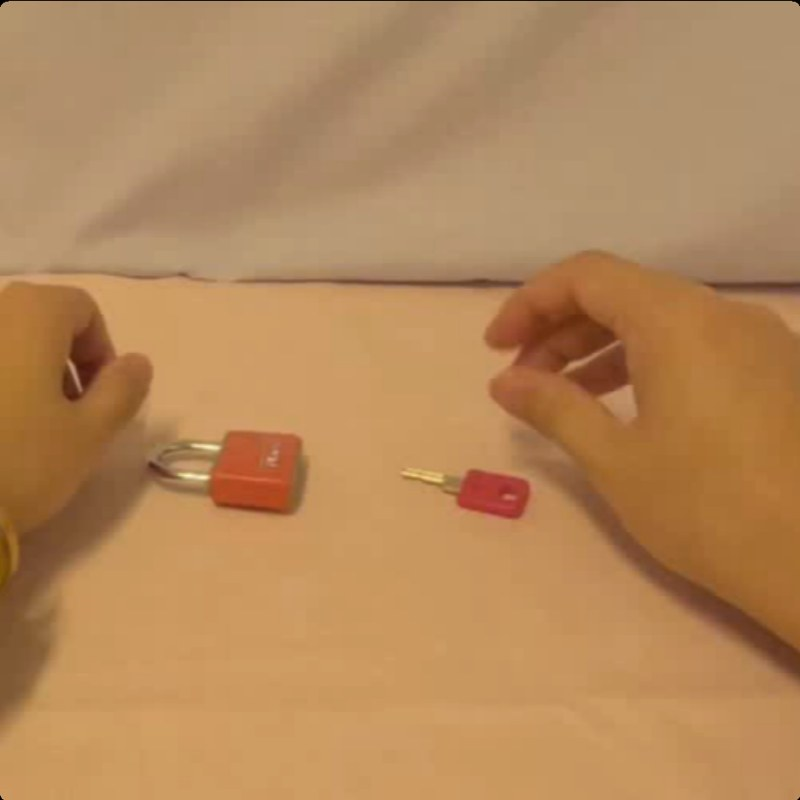
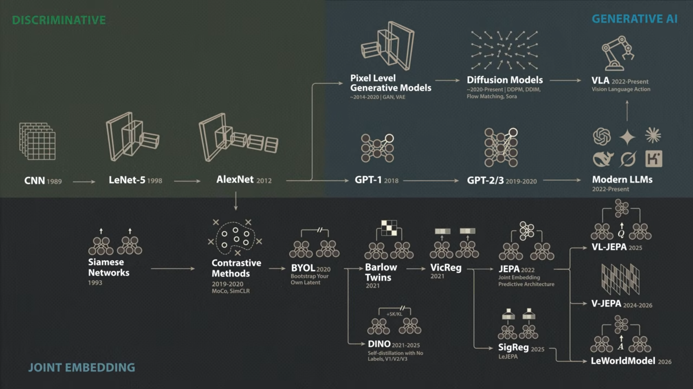
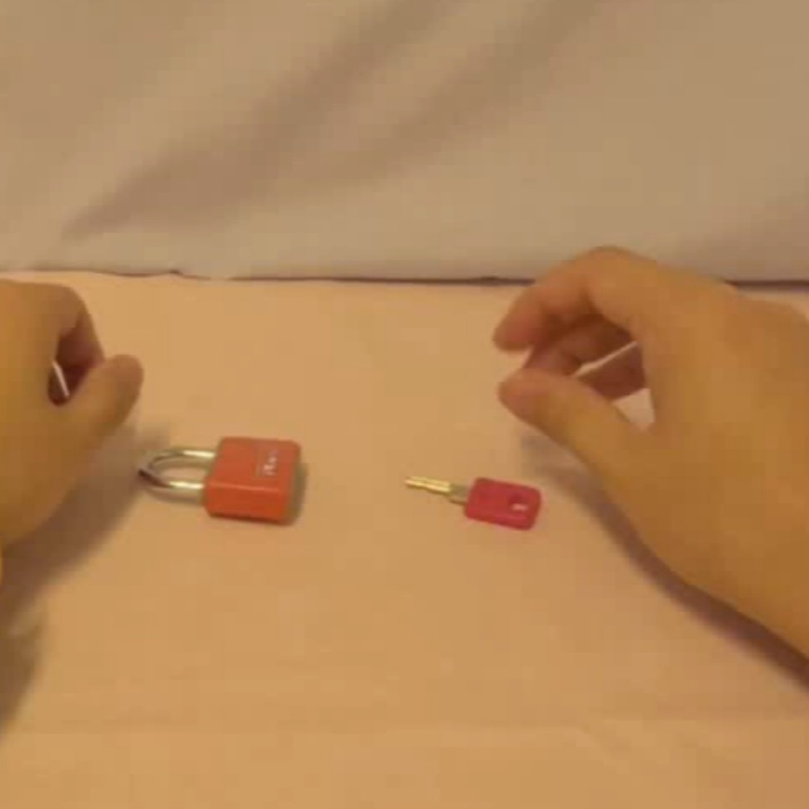
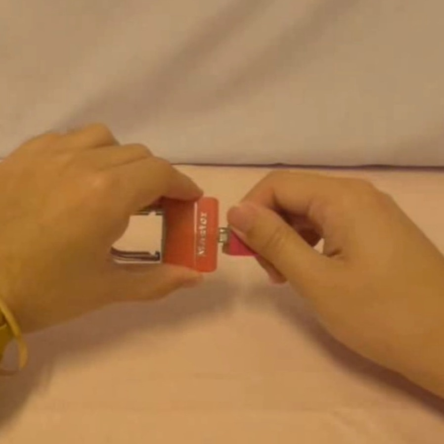
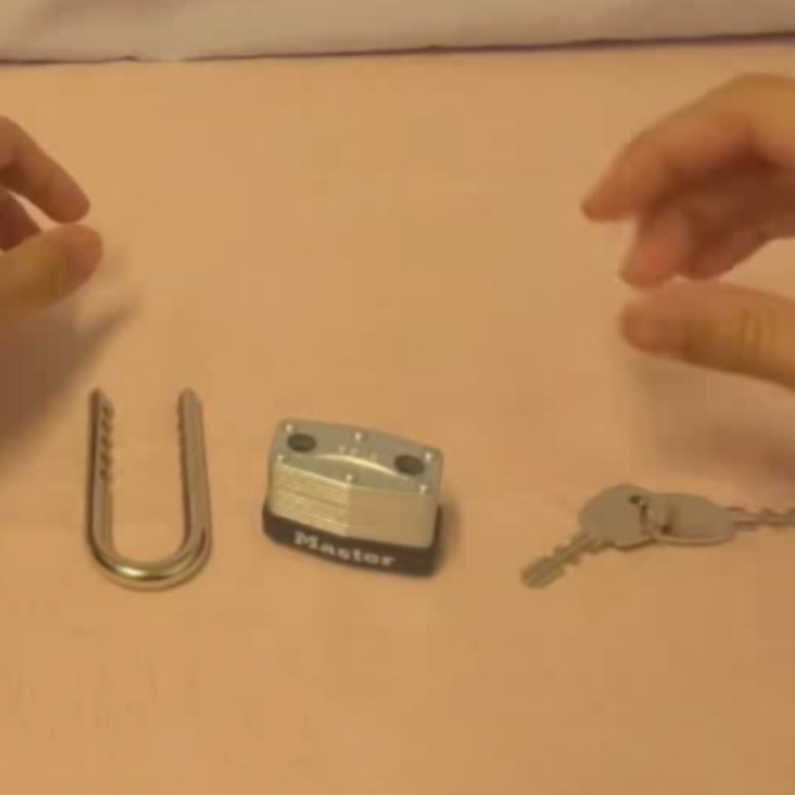
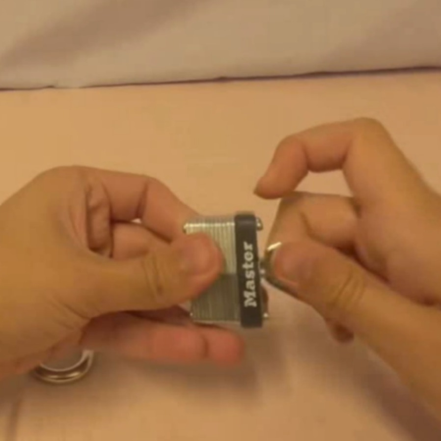

What is a policy?
A policy is a model that learns from demonstrations (human, robot or simulated) to turn the current scene into a chunk of future actions.

➞
➞
 MSc AI Dissertation Viva1 | Background | Policy
MSc AI Dissertation Viva1 | Background | PolicyA policy is a model that learns from demonstrations (human, robot or simulated) to turn the current scene into a chunk of future actions.

MSc AI Dissertation Viva2 | The problem | SelectionMSc AI Dissertation Viva3 | Background | World modelsA VLA maps the scene straight to an action, without predicting its consequences. A world model predicts those consequences first.

Screenshot from Welch Labs, Yann LeCun's $1B Bet Against LLMs (2026). Highlights added.
MSc AI Dissertation Viva4 | Data | EgoDexMSc AI Dissertation Viva5 | Data | Our windows18 numbers per step
Per wrist: 3 position + 6 orientation (6-D rotation encoding)
12 DoF in total, 6 per wrist. Poses come from the headset's hand tracking.
MSc AI Dissertation Viva6 | Method | Choosing a candidateMSc AI Dissertation Viva7 | Case study | DiWA on CALVINTask success rate (%), CALVIN. Selection (C2) is within noise of the policy alone (C1) on every task; finetuning (C3b) adds 14 to 40 points.
MSc AI Dissertation Viva8 | SummaryA frozen world model picked better motions from the policy's own candidates: 5.98% lower error, no retraining, when the three conditions hold.
K = 5, three seeds, EgoDex parts 1 to 3. Larger K, more seeds and more world models would firm up the result.
Run it on a robot in M.AI.ESTRO and score task success, not just plausibility.
MSc AI Dissertation Viva9 | Method | ACTACT should give five different movements when sampled five times. It gave five identical ones: the model learned to ignore its random input (posterior collapse).
Stronger penalty, cyclical annealing with dropout, free bits. None brought the variety back.
Widen the pool around ACT's answer, then let the world model refine it. Used only where the pool collapsed.
So Diffusion Policy, whose samples really differ, carries the main result.
MSc AI Dissertation Viva10 | Interpretation | Combining bothFine-tuning moves the pool. Selection then picks a better movement from it, at inference time.
MSc AI Dissertation Viva11 | The task | Open a lock

✓MSc AI Dissertation Viva12 | The task | A harder lock

✗MSc AI Dissertation Viva13 | The problem | Compounding errorIn 3D space: many possible movements, only a few succeed
MSc AI Dissertation Viva14 | Background | World modelsMSc AI Dissertation Viva15 | Background | VLA vs world model